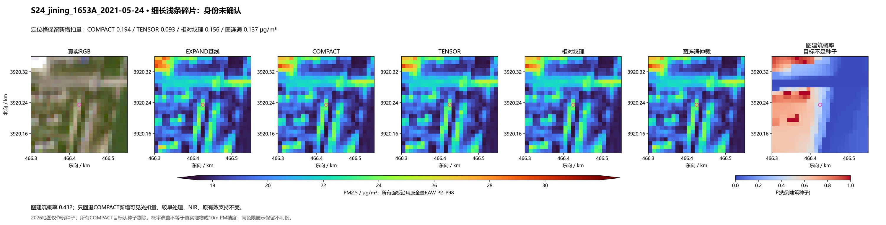
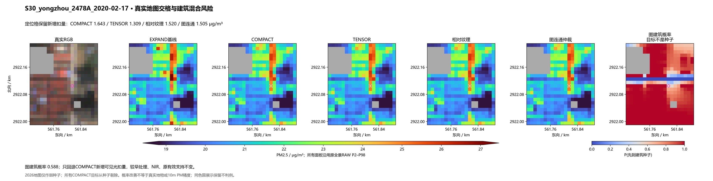
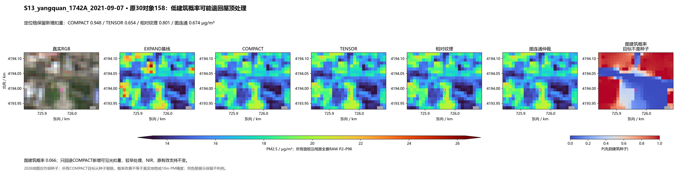
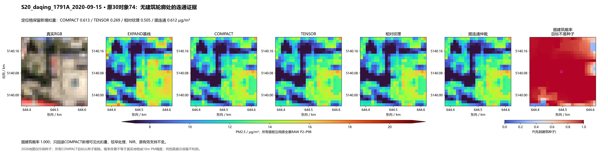
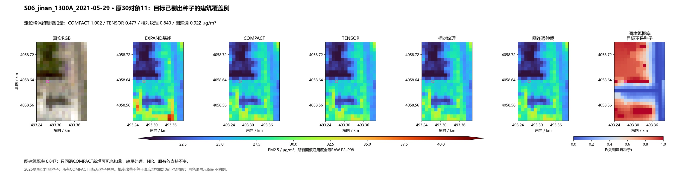

S16_zhoukou_2068A_2021-05-24 · 原道路风险：图连通能否提供信息
剩余新增扣量：相对纹理 1.095 → 图连通 0.828 μg/m³；图建筑概率 0.006。

206场，0新拟合。只调整COMPACT新增扣量的保护权重；170场使用真实地图弱种子，旧36保持TENSOR。目标格一律从种子剔除，缺测从图删除；单类/无种子块保持TENSOR。以下六例在运行前固定，保留阳泉低建筑概率与永州混合风险。
结论 · 固定机制 · 既有道路/工业/日期结果 · 输入概率诊断
剩余新增扣量：相对纹理 1.095 → 图连通 0.828 μg/m³；图建筑概率 0.006。
剩余新增扣量：相对纹理 0.156 → 图连通 0.137 μg/m³；图建筑概率 0.432。

剩余新增扣量：相对纹理 1.520 → 图连通 1.505 μg/m³；图建筑概率 0.588。

剩余新增扣量：相对纹理 0.801 → 图连通 0.674 μg/m³；图建筑概率 0.066。

剩余新增扣量：相对纹理 0.505 → 图连通 0.612 μg/m³；图建筑概率 1.000。

剩余新增扣量：相对纹理 0.840 → 图连通 0.922 μg/m³；图建筑概率 0.847。
